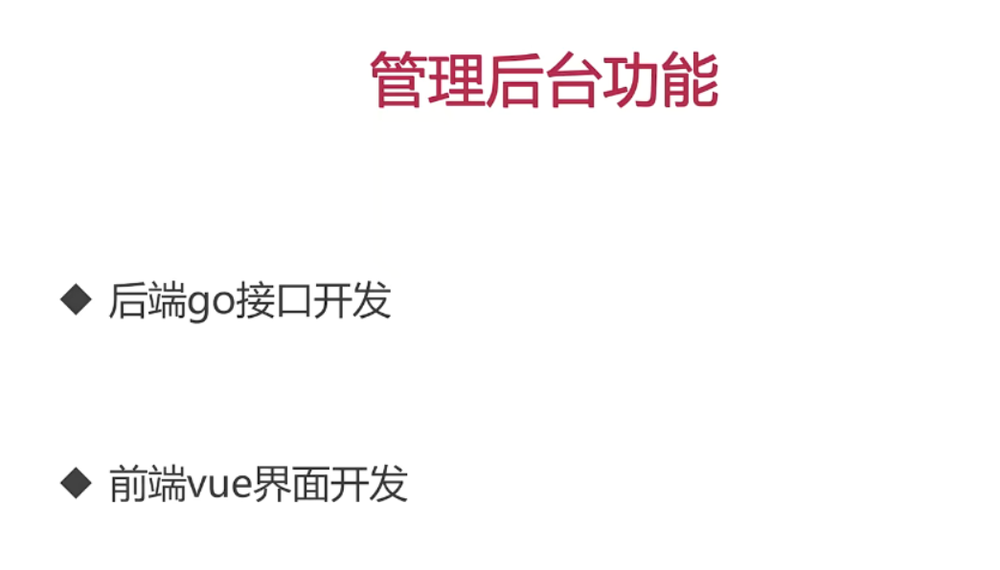
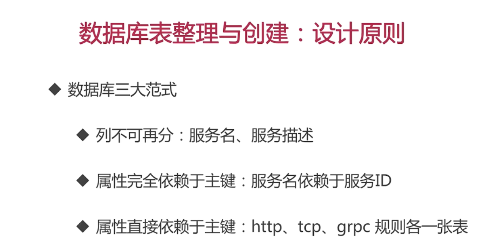
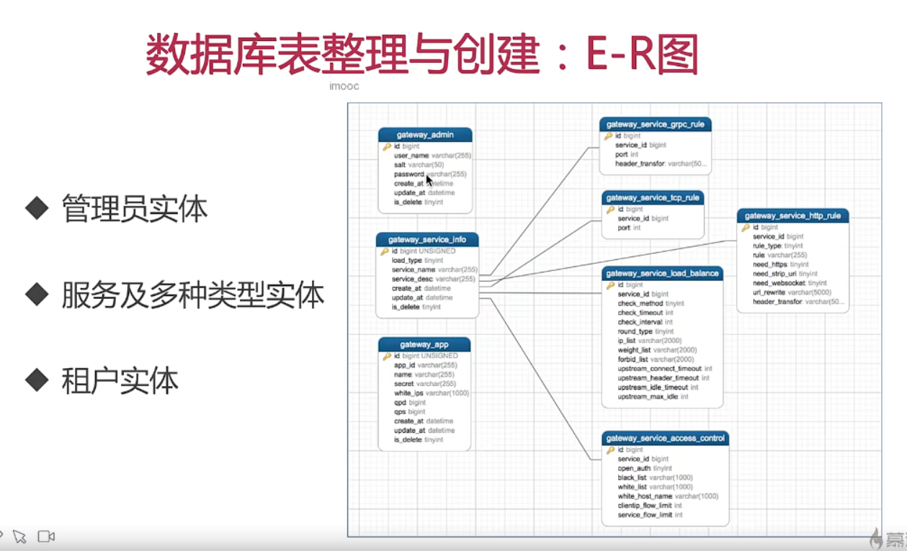
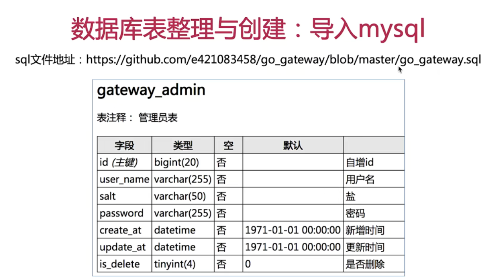
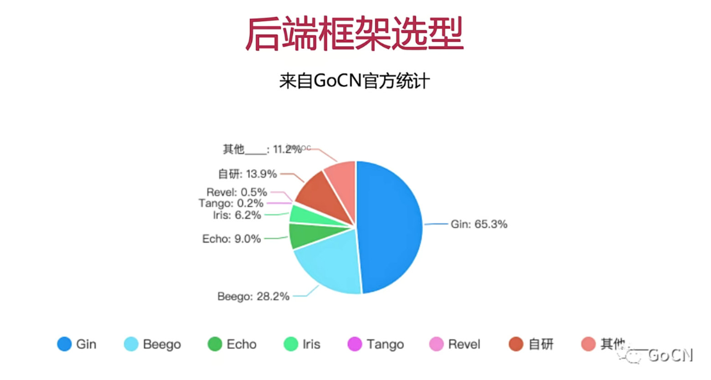

-- phpMyAdmin SQL Dump
-- version 4.7.0
-- https://www.phpmyadmin.net/
--
-- Host: 127.0.0.1
-- Generation Time: 2020-04-27 13:59:47
-- 服务器版本： 5.6.25-log
-- PHP Version: 7.0.18
SET SQL_MODE = "NO_AUTO_VALUE_ON_ZERO";
SET AUTOCOMMIT = 0;
START TRANSACTION;
SET time_zone = "+00:00";
/*!40101 SET @OLD_CHARACTER_SET_CLIENT=@@CHARACTER_SET_CLIENT */;
/*!40101 SET @OLD_CHARACTER_SET_RESULTS=@@CHARACTER_SET_RESULTS */;
/*!40101 SET @OLD_COLLATION_CONNECTION=@@COLLATION_CONNECTION */;
/*!40101 SET NAMES utf8mb4 */;
--
-- Database: `go_gateway`
--
-- --------------------------------------------------------
--
-- 表的结构 `gateway_admin`
--
CREATE TABLE `gateway_admin` (
`id` bigint(20) NOT NULL COMMENT '自增id',
`user_name` varchar(255) NOT NULL DEFAULT '' COMMENT '用户名',
`salt` varchar(50) NOT NULL DEFAULT '' COMMENT '盐',
`password` varchar(255) NOT NULL DEFAULT '' COMMENT '密码',
`create_at` datetime NOT NULL DEFAULT '1971-01-01 00:00:00' COMMENT '新增时间',
`update_at` datetime NOT NULL DEFAULT '1971-01-01 00:00:00' COMMENT '更新时间',
`is_delete` tinyint(4) NOT NULL DEFAULT '0' COMMENT '是否删除'
) ENGINE=InnoDB DEFAULT CHARSET=utf8 COMMENT='管理员表';
--
-- 转存表中的数据 `gateway_admin`
--
INSERT INTO `gateway_admin` (`id`, `user_name`, `salt`, `password`, `create_at`, `update_at`, `is_delete`) VALUES
(1, 'admin', 'admin', '2823d896e9822c0833d41d4904f0c00756d718570fce49b9a379a62c804689d3', '2020-04-10 16:42:05', '2020-04-21 06:35:08', 0);
-- --------------------------------------------------------
--
-- 表的结构 `gateway_app`
--
CREATE TABLE `gateway_app` (
`id` bigint(20) UNSIGNED NOT NULL COMMENT '自增id',
`app_id` varchar(255) NOT NULL DEFAULT '' COMMENT '租户id',
`name` varchar(255) NOT NULL DEFAULT '' COMMENT '租户名称',
`secret` varchar(255) NOT NULL DEFAULT '' COMMENT '密钥',
`white_ips` varchar(1000) NOT NULL DEFAULT '' COMMENT 'ip白名单，支持前缀匹配',
`qpd` bigint(20) NOT NULL DEFAULT '0' COMMENT '日请求量限制',
`qps` bigint(20) NOT NULL DEFAULT '0' COMMENT '每秒请求量限制',
`create_at` datetime NOT NULL COMMENT '添加时间',
`update_at` datetime NOT NULL COMMENT '更新时间',
`is_delete` tinyint(4) NOT NULL DEFAULT '0' COMMENT '是否删除 1=删除'
) ENGINE=InnoDB DEFAULT CHARSET=utf8 COMMENT='网关租户表';
--
-- 转存表中的数据 `gateway_app`
--
INSERT INTO `gateway_app` (`id`, `app_id`, `name`, `secret`, `white_ips`, `qpd`, `qps`, `create_at`, `update_at`, `is_delete`) VALUES
(31, 'app_id_a', '租户A', '449441eb5e72dca9c42a12f3924ea3a2', 'white_ips', 100000, 100, '2020-04-15 20:55:02', '2020-04-21 07:23:34', 0),
(32, 'app_id_b', '租户B', '8d7b11ec9be0e59a36b52f32366c09cb', '', 20, 0, '2020-04-15 21:40:52', '2020-04-21 07:23:27', 0),
(33, 'app_id', '租户名称', '', '', 0, 0, '2020-04-15 22:02:23', '2020-04-15 22:06:51', 1),
(34, 'app_id45', '名称', '07d980f8a49347523ee1d5c1c41aec02', '', 0, 0, '2020-04-15 22:06:38', '2020-04-15 22:06:49', 1);
-- --------------------------------------------------------
--
-- 表的结构 `gateway_service_access_control`
--
CREATE TABLE `gateway_service_access_control` (
`id` bigint(20) NOT NULL COMMENT '自增主键',
`service_id` bigint(20) NOT NULL DEFAULT '0' COMMENT '服务id',
`open_auth` tinyint(4) NOT NULL DEFAULT '0' COMMENT '是否开启权限 1=开启',
`black_list` varchar(1000) NOT NULL DEFAULT '' COMMENT '黑名单ip',
`white_list` varchar(1000) NOT NULL DEFAULT '' COMMENT '白名单ip',
`white_host_name` varchar(1000) NOT NULL DEFAULT '' COMMENT '白名单主机',
`clientip_flow_limit` int(11) NOT NULL DEFAULT '0' COMMENT '客户端ip限流',
`service_flow_limit` int(20) NOT NULL DEFAULT '0' COMMENT '服务端限流'
) ENGINE=InnoDB DEFAULT CHARSET=utf8 COMMENT='网关权限控制表';
--
-- 转存表中的数据 `gateway_service_access_control`
--
INSERT INTO `gateway_service_access_control` (`id`, `service_id`, `open_auth`, `black_list`, `white_list`, `white_host_name`, `clientip_flow_limit`, `service_flow_limit`) VALUES
(162, 35, 1, '', '', '', 0, 0),
(165, 34, 0, '', '', '', 0, 0),
(167, 36, 0, '', '', '', 0, 0),
(168, 38, 1, '111.11', '22.33', '11.11', 12, 12),
(169, 41, 1, '111.11', '22.33', '11.11', 12, 12),
(170, 42, 1, '111.11', '22.33', '11.11', 12, 12),
(171, 43, 0, '111.11', '22.33', '11.11', 12, 12),
(172, 44, 0, '', '', '', 0, 0),
(173, 45, 0, '', '', '', 0, 0),
(174, 46, 0, '', '', '', 0, 0),
(175, 47, 0, '', '', '', 0, 0),
(176, 48, 0, '', '', '', 0, 0),
(177, 49, 0, '', '', '', 0, 0),
(178, 50, 0, '', '', '', 0, 0),
(179, 51, 0, '', '', '', 0, 0),
(180, 52, 0, '', '', '', 0, 0),
(181, 53, 0, '', '', '', 0, 0),
(182, 54, 1, '127.0.0.3', '127.0.0.2', '', 11, 12),
(183, 55, 1, '127.0.0.2', '127.0.0.1', '', 45, 34),
(184, 56, 0, '192.168.1.0', '', '', 0, 0),
(185, 57, 0, '', '127.0.0.1,127.0.0.2', '', 0, 0),
(186, 58, 1, '', '', '', 0, 0),
(187, 59, 1, '127.0.0.1', '', '', 2, 3),
(188, 60, 1, '', '', '', 0, 0),
(189, 61, 0, '', '', '', 0, 0);
-- --------------------------------------------------------
--
-- 表的结构 `gateway_service_grpc_rule`
--
CREATE TABLE `gateway_service_grpc_rule` (
`id` bigint(20) NOT NULL COMMENT '自增主键',
`service_id` bigint(20) NOT NULL DEFAULT '0' COMMENT '服务id',
`port` int(5) NOT NULL DEFAULT '0' COMMENT '端口',
`header_transfor` varchar(5000) NOT NULL DEFAULT '' COMMENT 'header转换支持增加(add)、删除(del)、修改(edit) 格式: add headname headvalue 多个逗号间隔'
) ENGINE=InnoDB DEFAULT CHARSET=utf8 COMMENT='网关路由匹配表';
--
-- 转存表中的数据 `gateway_service_grpc_rule`
--
INSERT INTO `gateway_service_grpc_rule` (`id`, `service_id`, `port`, `header_transfor`) VALUES
(171, 53, 8009, ''),
(172, 54, 8002, 'add metadata1 datavalue,edit metadata2 datavalue2'),
(173, 58, 8012, 'add meta_name meta_value');
-- --------------------------------------------------------
--
-- 表的结构 `gateway_service_http_rule`
--
CREATE TABLE `gateway_service_http_rule` (
`id` bigint(20) NOT NULL COMMENT '自增主键',
`service_id` bigint(20) NOT NULL COMMENT '服务id',
`rule_type` tinyint(4) NOT NULL DEFAULT '0' COMMENT '匹配类型 0=url前缀url_prefix 1=域名domain ',
`rule` varchar(255) NOT NULL DEFAULT '' COMMENT 'type=domain表示域名，type=url_prefix时表示url前缀',
`need_https` tinyint(4) NOT NULL DEFAULT '0' COMMENT '支持https 1=支持',
`need_strip_uri` tinyint(4) NOT NULL DEFAULT '0' COMMENT '启用strip_uri 1=启用',
`need_websocket` tinyint(4) NOT NULL DEFAULT '0' COMMENT '是否支持websocket 1=支持',
`url_rewrite` varchar(5000) NOT NULL DEFAULT '' COMMENT 'url重写功能 格式：^/gatekeeper/test_service(.*) $1 多个逗号间隔',
`header_transfor` varchar(5000) NOT NULL DEFAULT '' COMMENT 'header转换支持增加(add)、删除(del)、修改(edit) 格式: add headname headvalue 多个逗号间隔'
) ENGINE=InnoDB DEFAULT CHARSET=utf8 COMMENT='网关路由匹配表';
--
-- 转存表中的数据 `gateway_service_http_rule`
--
INSERT INTO `gateway_service_http_rule` (`id`, `service_id`, `rule_type`, `rule`, `need_https`, `need_strip_uri`, `need_websocket`, `url_rewrite`, `header_transfor`) VALUES
(165, 35, 1, '', 0, 0, 0, '', ''),
(168, 34, 0, '', 0, 0, 0, '', ''),
(170, 36, 0, '', 0, 0, 0, '', ''),
(171, 38, 0, '/abc', 1, 0, 1, '^/abc $1', 'add head1 value1'),
(172, 43, 0, '/usr', 1, 1, 0, '^/afsaasf $1,^/afsaasf $1', ''),
(173, 44, 1, 'www.test.com', 1, 1, 1, '', ''),
(174, 47, 1, 'www.test.com', 1, 1, 1, '', ''),
(175, 48, 1, 'www.test.com', 1, 1, 1, '', ''),
(176, 49, 1, 'www.test.com', 1, 1, 1, '', ''),
(177, 56, 0, '/test_http_service', 1, 1, 1, '^/test_http_service/abb/(.*) /test_http_service/bba/$1', 'add header_name header_value'),
(178, 59, 1, 'test.com', 0, 1, 1, '', 'add headername headervalue'),
(179, 60, 0, '/test_strip_uri', 0, 1, 0, '^/aaa/(.*) /bbb/$1', ''),
(180, 61, 0, '/test_https_server', 1, 1, 0, '', '');
-- --------------------------------------------------------
--
-- 表的结构 `gateway_service_info`
--
CREATE TABLE `gateway_service_info` (
`id` bigint(20) UNSIGNED NOT NULL COMMENT '自增主键',
`load_type` tinyint(4) NOT NULL DEFAULT '0' COMMENT '负载类型 0=http 1=tcp 2=grpc',
`service_name` varchar(255) NOT NULL DEFAULT '' COMMENT '服务名称 6-128 数字字母下划线',
`service_desc` varchar(255) NOT NULL DEFAULT '' COMMENT '服务描述',
`create_at` datetime NOT NULL DEFAULT '1971-01-01 00:00:00' COMMENT '添加时间',
`update_at` datetime NOT NULL DEFAULT '1971-01-01 00:00:00' COMMENT '更新时间',
`is_delete` tinyint(4) DEFAULT '0' COMMENT '是否删除 1=删除'
) ENGINE=InnoDB DEFAULT CHARSET=utf8 COMMENT='网关基本信息表';
--
-- 转存表中的数据 `gateway_service_info`
--
INSERT INTO `gateway_service_info` (`id`, `load_type`, `service_name`, `service_desc`, `create_at`, `update_at`, `is_delete`) VALUES
(34, 0, 'websocket_test', 'websocket_test', '2020-04-13 01:31:47', '1971-01-01 00:00:00', 1),
(35, 1, 'test_grpc', 'test_grpc', '2020-04-13 01:34:32', '1971-01-01 00:00:00', 1),
(36, 2, 'test_httpe', 'test_httpe', '2020-04-11 21:12:48', '1971-01-01 00:00:00', 1),
(38, 0, 'service_name', '11111', '2020-04-15 07:49:45', '2020-04-11 23:59:39', 1),
(41, 0, 'service_name_tcp', '11111', '2020-04-13 01:38:01', '2020-04-12 01:06:09', 1),
(42, 0, 'service_name_tcp2', '11111', '2020-04-13 01:38:06', '2020-04-12 01:13:24', 1),
(43, 1, 'service_name_tcp4', 'service_name_tcp4', '2020-04-15 07:49:44', '2020-04-12 01:13:50', 1),
(44, 0, 'websocket_service', 'websocket_service', '2020-04-15 07:49:43', '2020-04-13 01:20:08', 1),
(45, 1, 'tcp_service', 'tcp_desc', '2020-04-15 07:49:41', '2020-04-13 01:46:27', 1),
(46, 1, 'grpc_service', 'grpc_desc', '2020-04-13 01:54:12', '2020-04-13 01:53:14', 1),
(47, 0, 'testsefsafs', 'werrqrr', '2020-04-13 01:59:14', '2020-04-13 01:57:49', 1),
(48, 0, 'testsefsafs1', 'werrqrr', '2020-04-13 01:59:11', '2020-04-13 01:58:14', 1),
(49, 0, 'testsefsafs1222', 'werrqrr', '2020-04-13 01:59:08', '2020-04-13 01:58:23', 1),
(50, 2, 'grpc_service_name', 'grpc_service_desc', '2020-04-15 07:49:40', '2020-04-13 02:01:00', 1),
(51, 2, 'gresafsf', 'wesfsf', '2020-04-15 07:49:39', '2020-04-13 02:01:57', 1),
(52, 2, 'gresafsf11', 'wesfsf', '2020-04-13 02:03:41', '2020-04-13 02:02:55', 1),
(53, 2, 'tewrqrw111', '123313', '2020-04-13 02:03:38', '2020-04-13 02:03:20', 1),
(54, 2, 'test_grpc_service1', 'test_grpc_service1', '2020-04-15 07:49:37', '2020-04-15 07:38:43', 1),
(55, 1, 'test_tcp_service1', 'redis服务代理', '2020-04-15 07:49:35', '2020-04-15 07:46:35', 1),
(56, 0, 'test_http_service', '测试HTTP代理', '2020-04-16 00:54:45', '2020-04-15 07:55:07', 0),
(57, 1, 'test_tcp_service', '测试TCP代理', '2020-04-19 14:03:09', '2020-04-15 07:58:39', 0),
(58, 2, 'test_grpc_service', '测试GRPC服务', '2020-04-21 07:20:16', '2020-04-15 07:59:46', 0),
(59, 0, 'test.com:8080', '测试域名接入', '2020-04-18 22:54:14', '2020-04-18 20:29:13', 0),
(60, 0, 'test_strip_uri', '测试路径接入', '2020-04-21 06:55:26', '2020-04-18 22:56:37', 0),
(61, 0, 'test_https_server', '测试https服务', '2020-04-19 12:22:33', '2020-04-19 12:17:04', 0);
-- --------------------------------------------------------
--
-- 表的结构 `gateway_service_load_balance`
--
CREATE TABLE `gateway_service_load_balance` (
`id` bigint(20) NOT NULL COMMENT '自增主键',
`service_id` bigint(20) NOT NULL DEFAULT '0' COMMENT '服务id',
`check_method` tinyint(20) NOT NULL DEFAULT '0' COMMENT '检查方法 0=tcpchk,检测端口是否握手成功',
`check_timeout` int(10) NOT NULL DEFAULT '0' COMMENT 'check超时时间,单位s',
`check_interval` int(11) NOT NULL DEFAULT '0' COMMENT '检查间隔, 单位s',
`round_type` tinyint(4) NOT NULL DEFAULT '2' COMMENT '轮询方式 0=random 1=round-robin 2=weight_round-robin 3=ip_hash',
`ip_list` varchar(2000) NOT NULL DEFAULT '' COMMENT 'ip列表',
`weight_list` varchar(2000) NOT NULL DEFAULT '' COMMENT '权重列表',
`forbid_list` varchar(2000) NOT NULL DEFAULT '' COMMENT '禁用ip列表',
`upstream_connect_timeout` int(11) NOT NULL DEFAULT '0' COMMENT '建立连接超时, 单位s',
`upstream_header_timeout` int(11) NOT NULL DEFAULT '0' COMMENT '获取header超时, 单位s',
`upstream_idle_timeout` int(10) NOT NULL DEFAULT '0' COMMENT '链接最大空闲时间, 单位s',
`upstream_max_idle` int(11) NOT NULL DEFAULT '0' COMMENT '最大空闲链接数'
) ENGINE=InnoDB DEFAULT CHARSET=utf8 COMMENT='网关负载表';
--
-- 转存表中的数据 `gateway_service_load_balance`
--
INSERT INTO `gateway_service_load_balance` (`id`, `service_id`, `check_method`, `check_timeout`, `check_interval`, `round_type`, `ip_list`, `weight_list`, `forbid_list`, `upstream_connect_timeout`, `upstream_header_timeout`, `upstream_idle_timeout`, `upstream_max_idle`) VALUES
(162, 35, 0, 2000, 5000, 2, '127.0.0.1:50051', '100', '', 10000, 0, 0, 0),
(165, 34, 0, 2000, 5000, 2, '100.90.164.31:8072,100.90.163.51:8072,100.90.163.52:8072,100.90.165.32:8072', '50,50,50,80', '', 20000, 20000, 10000, 100),
(167, 36, 0, 2000, 5000, 2, '100.90.164.31:8072,100.90.163.51:8072,100.90.163.52:8072,100.90.165.32:8072', '50,50,50,80', '100.90.164.31:8072,100.90.163.51:8072', 10000, 10000, 10000, 100),
(168, 38, 0, 0, 0, 1, '111:111,22:111', '11,11', '111', 1111, 111, 222, 333),
(169, 41, 0, 0, 0, 1, '111:111,22:111', '11,11', '111', 0, 0, 0, 0),
(170, 42, 0, 0, 0, 1, '111:111,22:111', '11,11', '111', 0, 0, 0, 0),
(171, 43, 0, 2, 5, 1, '111:111,22:111', '11,11', '', 1111, 2222, 333, 444),
(172, 44, 0, 2, 5, 2, '127.0.0.1:8076', '50', '', 0, 0, 0, 0),
(173, 45, 0, 2, 5, 2, '127.0.0.1:88', '50', '', 0, 0, 0, 0),
(174, 46, 0, 2, 5, 2, '127.0.0.1:8002', '50', '', 0, 0, 0, 0),
(175, 47, 0, 2, 5, 2, '12777:11', '11', '', 0, 0, 0, 0),
(176, 48, 0, 2, 5, 2, '12777:11', '11', '', 0, 0, 0, 0),
(177, 49, 0, 2, 5, 2, '12777:11', '11', '', 0, 0, 0, 0),
(178, 50, 0, 2, 5, 2, '127.0.0.1:8001', '50', '', 0, 0, 0, 0),
(179, 51, 0, 2, 5, 2, '1212:11', '50', '', 0, 0, 0, 0),
(180, 52, 0, 2, 5, 2, '1212:11', '50', '', 0, 0, 0, 0),
(181, 53, 0, 2, 5, 2, '1111:11', '111', '', 0, 0, 0, 0),
(182, 54, 0, 2, 5, 1, '127.0.0.1:80', '50', '', 0, 0, 0, 0),
(183, 55, 0, 2, 5, 3, '127.0.0.1:81', '50', '', 0, 0, 0, 0),
(184, 56, 0, 2, 5, 2, '127.0.0.1:2003,127.0.0.1:2004', '50,50', '', 0, 0, 0, 0),
(185, 57, 0, 2, 5, 2, '127.0.0.1:6379', '50', '', 0, 0, 0, 0),
(186, 58, 0, 2, 5, 2, '127.0.0.1:50055', '50', '', 0, 0, 0, 0),
(187, 59, 0, 2, 5, 2, '127.0.0.1:2003,127.0.0.1:2004', '50,50', '', 0, 0, 0, 0),
(188, 60, 0, 2, 5, 2, '127.0.0.1:2003,127.0.0.1:2004', '50,50', '', 0, 0, 0, 0),
(189, 61, 0, 2, 5, 2, '127.0.0.1:3003,127.0.0.1:3004', '50,50', '', 0, 0, 0, 0);
-- --------------------------------------------------------
--
-- 表的结构 `gateway_service_tcp_rule`
--
CREATE TABLE `gateway_service_tcp_rule` (
`id` bigint(20) NOT NULL COMMENT '自增主键',
`service_id` bigint(20) NOT NULL COMMENT '服务id',
`port` int(5) NOT NULL DEFAULT '0' COMMENT '端口号'
) ENGINE=InnoDB DEFAULT CHARSET=utf8 COMMENT='网关路由匹配表';
--
-- 转存表中的数据 `gateway_service_tcp_rule`
--
INSERT INTO `gateway_service_tcp_rule` (`id`, `service_id`, `port`) VALUES
(171, 41, 8002),
(172, 42, 8003),
(173, 43, 8004),
(174, 38, 8004),
(175, 45, 8001),
(176, 46, 8005),
(177, 50, 8006),
(178, 51, 8007),
(179, 52, 8008),
(180, 55, 8010),
(181, 57, 8011);
--
-- Indexes for dumped tables
--
--
-- Indexes for table `gateway_admin`
--
ALTER TABLE `gateway_admin`
ADD PRIMARY KEY (`id`);
--
-- Indexes for table `gateway_app`
--
ALTER TABLE `gateway_app`
ADD PRIMARY KEY (`id`);
--
-- Indexes for table `gateway_service_access_control`
--
ALTER TABLE `gateway_service_access_control`
ADD PRIMARY KEY (`id`);
--
-- Indexes for table `gateway_service_grpc_rule`
--
ALTER TABLE `gateway_service_grpc_rule`
ADD PRIMARY KEY (`id`);
--
-- Indexes for table `gateway_service_http_rule`
--
ALTER TABLE `gateway_service_http_rule`
ADD PRIMARY KEY (`id`);
--
-- Indexes for table `gateway_service_info`
--
ALTER TABLE `gateway_service_info`
ADD PRIMARY KEY (`id`);
--
-- Indexes for table `gateway_service_load_balance`
--
ALTER TABLE `gateway_service_load_balance`
ADD PRIMARY KEY (`id`);
--
-- Indexes for table `gateway_service_tcp_rule`
--
ALTER TABLE `gateway_service_tcp_rule`
ADD PRIMARY KEY (`id`);
--
-- 在导出的表使用AUTO_INCREMENT
--
--
-- 使用表AUTO_INCREMENT `gateway_admin`
--
ALTER TABLE `gateway_admin`
MODIFY `id` bigint(20) NOT NULL AUTO_INCREMENT COMMENT '自增id', AUTO_INCREMENT=2;
--
-- 使用表AUTO_INCREMENT `gateway_app`
--
ALTER TABLE `gateway_app`
MODIFY `id` bigint(20) UNSIGNED NOT NULL AUTO_INCREMENT COMMENT '自增id', AUTO_INCREMENT=35;
--
-- 使用表AUTO_INCREMENT `gateway_service_access_control`
--
ALTER TABLE `gateway_service_access_control`
MODIFY `id` bigint(20) NOT NULL AUTO_INCREMENT COMMENT '自增主键', AUTO_INCREMENT=190;
--
-- 使用表AUTO_INCREMENT `gateway_service_grpc_rule`
--
ALTER TABLE `gateway_service_grpc_rule`
MODIFY `id` bigint(20) NOT NULL AUTO_INCREMENT COMMENT '自增主键', AUTO_INCREMENT=174;
--
-- 使用表AUTO_INCREMENT `gateway_service_http_rule`
--
ALTER TABLE `gateway_service_http_rule`
MODIFY `id` bigint(20) NOT NULL AUTO_INCREMENT COMMENT '自增主键', AUTO_INCREMENT=181;
--
-- 使用表AUTO_INCREMENT `gateway_service_info`
--
ALTER TABLE `gateway_service_info`
MODIFY `id` bigint(20) UNSIGNED NOT NULL AUTO_INCREMENT COMMENT '自增主键', AUTO_INCREMENT=62;
--
-- 使用表AUTO_INCREMENT `gateway_service_load_balance`
--
ALTER TABLE `gateway_service_load_balance`
MODIFY `id` bigint(20) NOT NULL AUTO_INCREMENT COMMENT '自增主键', AUTO_INCREMENT=190;
--
-- 使用表AUTO_INCREMENT `gateway_service_tcp_rule`
--
ALTER TABLE `gateway_service_tcp_rule`
MODIFY `id` bigint(20) NOT NULL AUTO_INCREMENT COMMENT '自增主键', AUTO_INCREMENT=182;COMMIT;
/*!40101 SET CHARACTER_SET_CLIENT=@OLD_CHARACTER_SET_CLIENT */;
/*!40101 SET CHARACTER_SET_RESULTS=@OLD_CHARACTER_SET_RESULTS */;
/*!40101 SET COLLATION_CONNECTION=@OLD_COLLATION_CONNECTION */;
技术选型
